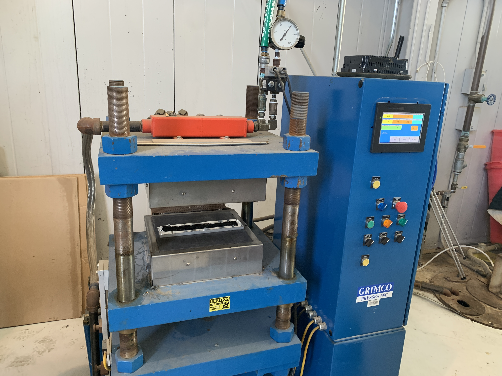

Compression Molding and Carbonization MethodsTo create test coupons, the procedure for compression molding is as follows: first, heat the mold to 190 degrees celcius and hold for 15 minutes to melt the resin and allow for infusion into the fibers. As temperature increases, the resin is partially crosslinking, or b-staging, and this causes the viscosity of the resin to increase. After 15 minutes of melting and partial polymerization, the compression is activated to "wet out" the remaining fibers, and a force of 10 tons is applied. The temperature is brought up to 250 degrees celcius so that the coupon may fully cure and harden. The mold is left under isothermal compression for three hours. After this step, the process is completed, and the mold can be taken out to cool and the coupon is retrieved. |